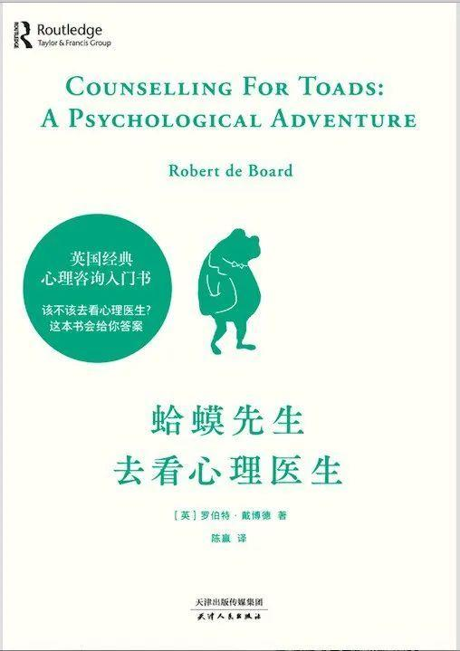

心理成长 | 《蛤蟆先生去看心理医生》：生活能治愈的，是愿意自愈的人
导言（Introduction）
主要角色（Main Characters）
情节介绍（Plot Summary）
核心知识点（Core Knowledge）

看似静静流淌，风平浪静，实则暗流涌动，危险重重。
在表面平静的生活背后，每个人的一生中，都会遇到几条汹涌的暗流。
如何才能顺利跨过人生的暗流，通往彼岸？
罗伯特用无数临床案例，拼凑起了一位“蛤蟆先生”，并讲述了他从抑郁到痊愈的过程。
当你看完《蛤蟆先生去看心理医生》这本书，就会明白：
在人生的长河里，没有谁会是你的摆渡人。
能将你摆渡过岸的，只能是你自己。